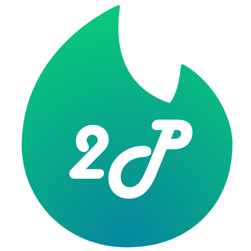

Welcome to 2Pipe:
It starts with a question!
We help you to identify the most suitable pipeline for MAG reconstruction according to your needs.
Get Started
Pipeline Gallery
Compare Pipelines
Workflows
General Workflow
Documentation
Add your pipeline
Source Code
Back to Introduction
Previous
Next
General Metagenomics Workflow
×
Pipeline Gallery
×
Compare Pipelines
×
Pipeline Workflows
×
Select a Pipeline:
Choose a pipeline...
Go to Gallery
Developed by
BugFri